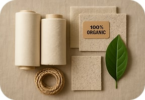
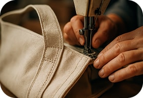

<section class="advantages">
  <div class="container">
    <h4 class="advantages-subtitles">Переваги</h4>
    <h2 class="advantages-title">Чому обрати нас?</h2>
    <p class="advantages-text">
      Наші сумки виготовлені з екологічно чистих матеріалів, що забезпечують
      стійкість і довговічність. Обираючи EcoTote, ви підтримуєте екологічну
      відповідальність.
    </p>
    <ul class="advantages-list">
      <li class="advantages-item">
        
        <h3 class="advantages-item-subtitle">Стійкість та екологічність</h3>
        <p class="advantages-item-text">
          Виготовлені з органічної бавовни та переробленого пластику.
        </p>
      </li>

      <li>
        
        <h3 class="advantages-item-subtitle">Міцність і довговічність</h3>
        <p class="advantages-item-text">
          Наші сумки мають посилені шви для тривалого використання.
        </p>
      </li>

      <li>
        
        <h3 class="advantages-item-subtitle">Стильний та сучасний дизайн</h3>
        <p class="advantages-item-text">
          Мінімалістичні моделі в обмежених серіях для кожного стилю.
        </p>
      </li>
    </ul>
  </div>
</section>
